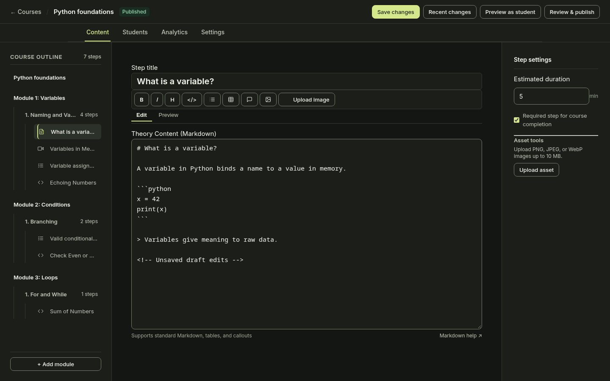
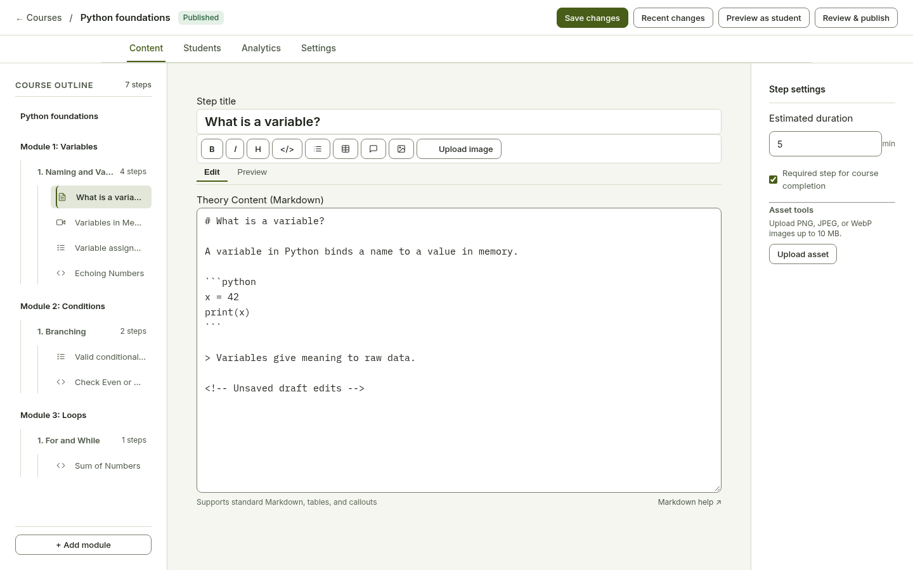
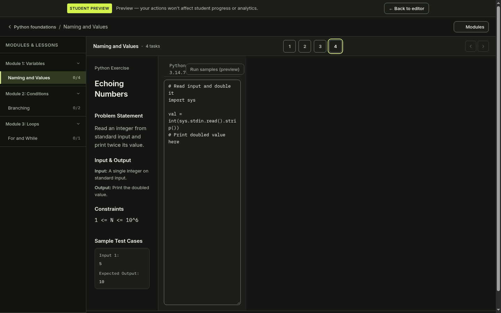
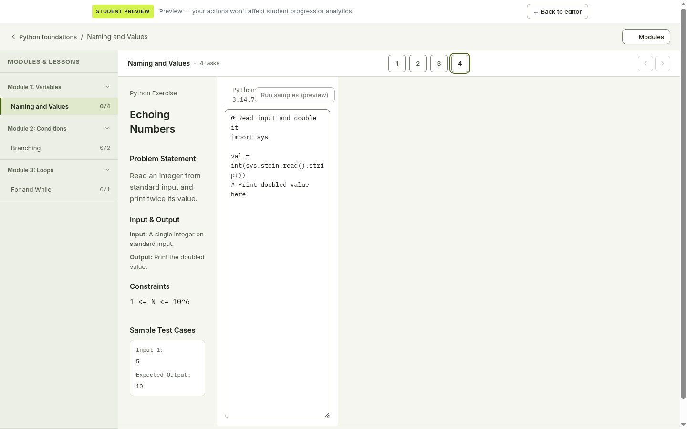
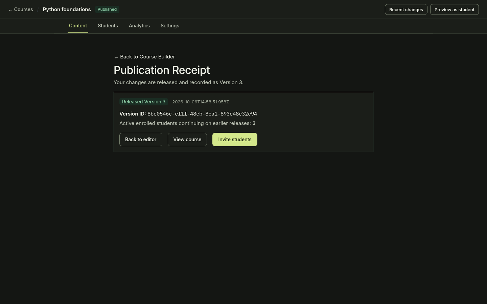
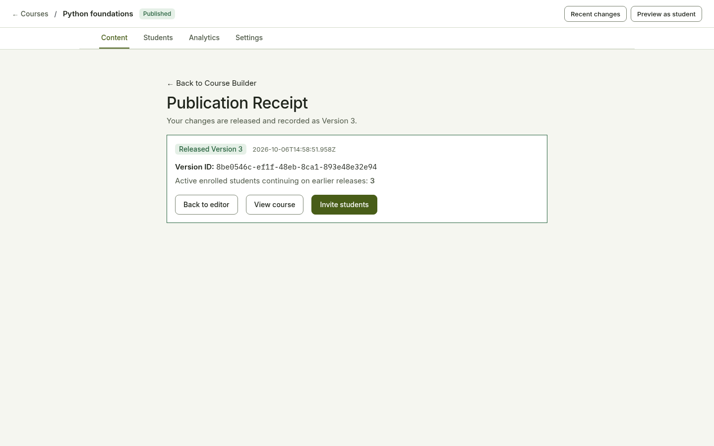

01-author-dashboard__dark.png


36 fresh desktop captures at 1440×900. Click an image for full size. Publication error/receipt states use controlled validation fixtures and an ephemeral SQLite database. Course contents differ after test edits; this compares interface layout and states.












No earlier capture of this state.

No earlier capture of this state.
